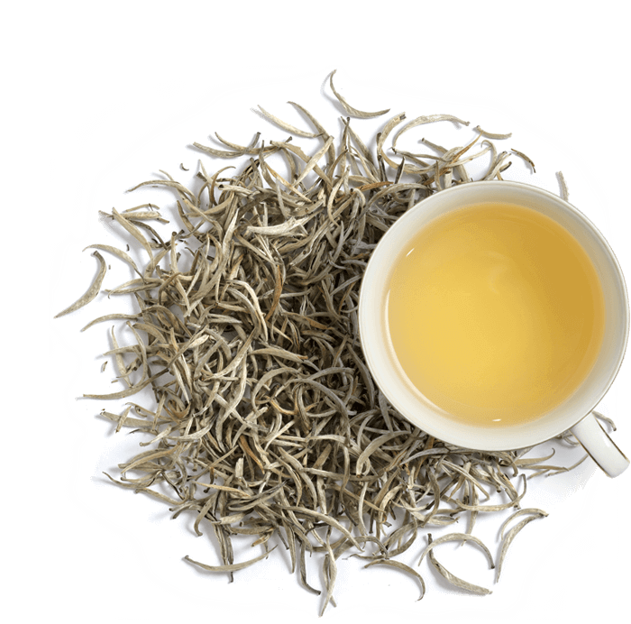

Silver Tips
The finest buds of a special cultivar which turn velvety-silver when dried. Extremely rare, and usually handpicked before sunrise, they offer the gentlest fragrant brew.
The finest buds of a special cultivar which turn velvety-silver when dried. Extremely rare, and usually handpicked before sunrise, they offer the gentlest fragrant brew.
Contrary to popular belief, Orange Pekoe refers to a leaf size and not a flavour. Orange Pekoe tea has a strong scent and a smooth flavour with a sweet finish.
Very rare pale golden velvety whole buds taken from select plants, has a very delicate brew with a mild floral bouquet.
This green tea dates back to the 1800s and the name originates from the fact that the tea is rolled very tightly into small pellets befitting ammunition used in old muskets.
Pekoe refers to tea made from the just-unfurling buds of the tea bush. Pure pekoes are tightly rolled into a near spherical shape and need extreme care when manufacturing.
The smallest of particles that infuse swiftly, resulting in optimum strength, colour and body. It is most suited for commercial brewing.
| Types Of Tea | Extra Flavours | Where It Grows | Price |
|---|---|---|---|
| Silver Tips | Lemmon Grapes Ginger Cinnomon |
Uda Pussellawa Dimbula Uva Kandy Sabaragamuwa Ruhuna |
High |
| OP-Orange Pekoe | Almond Mango Apple Black Currant Cinnomon |
Uva Kandy Sabaragamuwa |
Medium |
| Dust One | None | Ruhuna Dimbula Uva |
Low |
| Gunpowder | Almond Peach Blue Berry apple black currant Cinnomon |
Uva Kandy Sabaragamuwa Ruhuna |
Low |
| Pekoe | Vanila peach mango apple Cinnomon |
Dimbula Uva Kandy |
High |
| Golden Tips | Lemon Pepper Spple Orange Cinnomon |
Sabaragamuwa Ruhuna Uda Pussellawa Dimbula |
High |
| Sri Lanka | All Flavours | - | - |